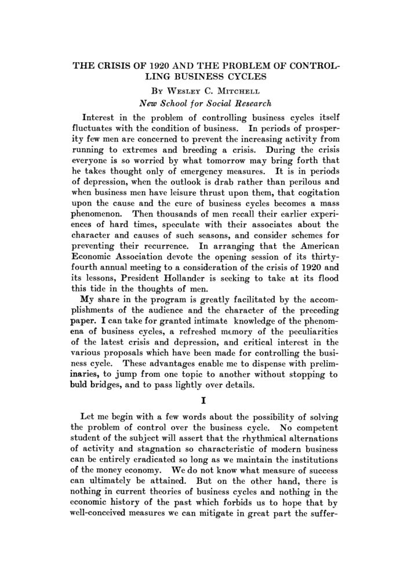

Mitchell, 1921: dá para domar o ciclo econômico?
Leitura: 8 min
Depois da crise de 1920, Mitchell propõe usar índices de produção para guiar os juros, planejar obras públicas para as depressões e medir o que ainda não se media.


Wesley C. Mitchell, da New School for Social Research, começou sua fala em Pittsburgh, em 27 de dezembro de 1921, com uma observação sobre o próprio público. O interesse pelo controle dos ciclos, disse, também flutua com os negócios. Na prosperidade, poucos se preocupam em evitar excessos; na crise, todos só pensam em emergências. É na depressão, quando os homens de negócios têm tempo de sobra, que pensar nas causas e na cura dos ciclos vira fenômeno de massa. Ao abrir a reunião com a crise de 1920, o presidente Jacob H. Hollander quis aproveitar essa maré.
É possível controlar o ciclo?
Ninguém competente, diz Mitchell, afirmará que a alternância de atividade e estagnação pode ser eliminada enquanto existirem as instituições da economia monetária. Mas nada nas teorias nem na história proíbe a esperança de atenuar boa parte do sofrimento. Nem mesmo as teorias de causa cósmica. Se Henry L. Moore provar que o planeta Vênus, em seu movimento de oito anos, gera ciclos na Terra, ainda assim se poderia compensar o efeito administrando o que está sob controle, como se compensa o inverno para não morrer de frio.
A história, além disso, mostra uma intervenção bem-sucedida. Em meados do século XIX, os ingleses descobriram que, se o público tivesse a garantia de que todo devedor solvente obteria crédito pagando um juro alto, não haveria corridas bancárias nem falências desnecessárias. As crises inglesas ficaram menos espetaculares, e as liquidações, mais cautelosas e mais longas. Os Estados Unidos continuaram a ter pânicos violentos, como em 1873, 1893 e 1907, até que o Federal Reserve Act de 1914 centralizou os recursos bancários. Seis anos depois, a nova máquina passou no teste.
“aprendemos a impedir que as crises degenerem em pânicos” (“we have learned how to prevent crises from degenerating into panics”)
O próximo problema, então, é reduzir os excessos dos booms e o sofrimento das depressões. Até ali, diz Mitchell, o país combatera os efeitos, com medidas de emergência, em vez das causas; o sinal mais promissor de 1920 e 1921 era a atitude preventiva da conferência sobre desemprego dirigida pelo secretário Hoover.
Quando o Federal Reserve deveria ter agido?
O ponto central do debate sobre 1919 é o momento em que os bancos do Federal Reserve deveriam ter elevado os juros de redesconto. Mitchell cita a opinião pessoal do governador Benjamin Strong, diante de uma comissão do Congresso: teria sido desejável subir as taxas entre janeiro e março de 1919, em vez de esperar até novembro. Talvez o lançamento do Victory Loan na primavera o impedisse; o que importa a Mitchell é a conclusão de que juros mais altos teriam moderado a expansão e a severidade da crise. Ele propõe generalizar: subir o redesconto sempre que a produção se aproximar do limite e a expansão passar a consistir em elevar preços de títulos, equipamentos e mercadorias.
Responde a três objeções. A primeira é que a medida seria ineficaz, porque o desconto bancário pesa pouco nos custos americanos, ao contrário do comércio de Londres antes da guerra, feito com margens estreitas. Mitchell admite a força do argumento, mas acha que parte das transações seria afetada diretamente e outra, maior, pelo sinal de cautela dos bancos. A segunda, de A. C. Miller, do Federal Reserve Board, é que o público aceita o índice de reserva como guia. Mitchell lembra que a Inglaterra, mesmo com esse sistema, sofreu muito com os ciclos, e que o economista pode propor campanhas de educação.
A terceira objeção é que não se sabe em que ponto da prosperidade frear. Aqui entra a proposta de O. M. W. Sprague: usar índices de produção física, como os de Day, King, Snyder e Stewart. Depois de uma depressão, o aumento dos negócios vem sobretudo de mais bens úteis, e a expansão é desejável. Quando o equipamento está tomado e a força de trabalho, empregada, novas altas de preços só criam especulação e os emaranhados de crédito que prolongam a liquidação. Nesse ponto, os juros deveriam subir, mesmo com reservas ainda altas.
O que mais poderia estabilizar a atividade?
Mitchell lista outros planos. O primeiro é o planejamento de longo prazo das obras públicas, para concentrá-las nas depressões, estudado por A. L. Bowley na Inglaterra e defendido pelos Webb. Nos Estados Unidos, Otto T. Mallery convenceu a Pensilvânia a criar a máquina para isso em 1917; a Califórnia copiou a lei em 1921, e um projeto federal tramitava no Congresso. O volume anual de construção pública chegava a centenas de milhões, e parte dele poderia ser distribuída segundo o ciclo.
O segundo é estender o planejamento às empresas. As ferrovias, observa, constroem e compram mais nos anos de atividade, quando os custos estão altos, porque vivem da mão para a boca; com receitas suficientes, poderiam ao menos nivelar os gastos entre anos bons e ruins. Somadas as demais indústrias, as compras e obras planejáveis chegariam a bilhões. O terceiro é o seguro-desemprego, em especial o projeto Huber, em Wisconsin, que obrigaria os industriais a uma companhia de seguro com prêmios conforme a rotatividade de cada um. A ideia é menos aliviar o desempregado do que dar ao empregador um motivo para não demitir, como o seguro de acidentes reduzira os acidentes.
O que faltava saber?
A crise, diz Mitchell, mostrou o peso da especulação no pensamento dos próprios economistas. Fala-se muito em créditos congelados, mas ninguém sabe que proporção dos empréstimos se encaixa na definição, nem quanto disso é normal. E as estatísticas bancárias têm uma lacuna grave.
As estatísticas de desemprego, salários e ganhos eram ainda piores. No outono de 1921, o Bureau of Labor Statistics e a comissão consultiva da conferência sobre desemprego não conseguiram chegar a menos de um milhão de diferença em suas estimativas de desempregados. Sobre trabalho em tempo parcial, quase nada se sabia. Sem dados de folha de pagamento e de renda familiar, as comparações entre salário e custo de vida ficavam em dúvida. E no comércio de mercadorias não se sabia nem quantas lojas de varejo e de atacado havia no país. Mitchell pede aos colegas que usem os dados existentes e cooperem com as agências públicas e privadas que tentavam melhorá-los.
Onde está o defeito?
Para chegar ao centro do problema, Mitchell recorre a Carlyle, que descreveu em 1843 uma Inglaterra cheia de riqueza e morrendo de inanição, como se um encantamento proibisse os trabalhadores de tocar no fruto do próprio trabalho. Carlyle errou ao tomar como crônica uma doença intermitente, mas a descrição, diz Mitchell, serve aos Estados Unidos de 1921: milhões ociosos querendo trabalhar, fábricas paradas cujos donos queriam acendê-las, e o que se queria produzir era o que se precisava consumir. O encantamento vinha da economia monetária, que desvia o objetivo da atividade econômica.
“O que somos obrigados a fazer, como cidadãos da economia monetária, é ganhar dinheiro.” (“What we are compelled to do as citizens of the money economy is to make money.”)
Como seres humanos, queremos fazer bens úteis; quando fazê-los não dá lucro, sacrificamos essa vontade à de fazer dinheiro. Daí o otimismo de Mitchell: sendo a economia monetária um conjunto de instituições humanas, pode ser emendada. Para isso, o economista deve avançar em três linhas: usar cada vez mais a análise quantitativa e cooperar na obtenção de dados; entender o papel das instituições, a começar pela economia monetária, porque não se promove o bem-estar sem saber onde o sistema de preços serve bem e onde serve mal; e adotar uma atitude construtiva, citando John Dewey, que em 1917 comparava a ciência social à física do início do século XVII.
Na minha leitura
Na minha leitura, o mérito de método do texto está em transformar uma pergunta de política em um programa de medição. A regra proposta para o redesconto depende de um indicador observável, o índice de produção física, e não do juízo do momento; as obras públicas e o seguro-desemprego são apresentados como mecanismos de incentivo; e a lista de lacunas estatísticas é, na prática, a condição para que qualquer regra funcione.
O texto também deixa claro um dilema que persiste: a regra de Mitchell e Sprague pede que o banco central aperte quando o ciclo ainda parece bom e as reservas estão altas, isto é, quando a pressão política para não agir é maior. Por isso ele insiste em educação do público, além de técnica.
Glossário
- Economia monetária
- na expressão de Mitchell, o conjunto de instituições em que a produção se organiza pela busca de lucro em dinheiro.
- Taxa de redesconto
- juro cobrado pelos bancos do Federal Reserve ao emprestar a bancos comerciais.
- Índice de reserva
- razão entre as reservas e as obrigações dos bancos do Federal Reserve.
- Índice de produção física
- medida do volume de bens produzidos, sem o efeito dos preços.
- Crédito congelado
- empréstimo que o devedor não consegue liquidar no prazo.
- Rotatividade (labor turnover)
- frequência com que uma empresa contrata e demite trabalhadores.
Fontes
- The Crisis of 1920 and the Problem of Controlling Business Cycles — Wesley C. Mitchell (New School for Social Research) (pp. 20–32). JSTOR · Internet Archive (PDF)
- Edição completa, com os demais artigos: Nº 175 do Arquivo.
Documento em domínio público (EUA, publicado antes de 1931), via JSTOR Early Journal Content e Internet Archive. Resumo e comentário do autor deste site, sem afiliação com a American Economic Association. Encontrou um erro? Escreva: a correção é publicada no próprio texto, com data.
↑ Nº 175 · Pittsburgh, 1921: a crise de 1920 e a ambição de domar o ciclo Barnett, 1921: o sindicato depois do salto da guerra →